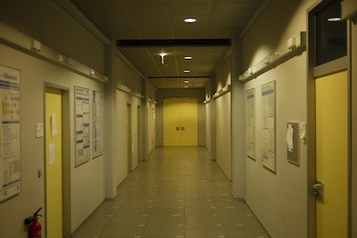
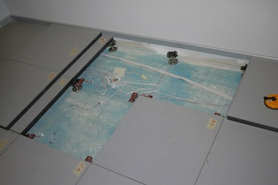
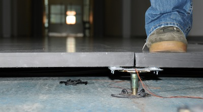
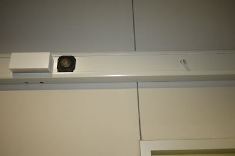

The testbed in Braunschweig consists of 30 iSense nodes, connected to different kinds of sensors and actuators. The sensor nodes are installed beneath a hallway floor, connected to a total of 120 load sensors (each 4 load senors to one iSense node). The hallway floor consists of quadratic floor tiles with a side length of 60cm - placed on small metal columns. On each of these metal columns, we have installed on self-constructed load sensor. The setup is shown in the following figures:
  In addition to the load sensors, the iSense sensor nodes are also connected to a sensor/actuator unit at the wall. Each of these units consist of one PIR (passive infrared) sensor, and a light and speaker unit — allowing an interaction of the sensor network with passers-by. Such a unit looks as follows:
In total, we have installed 30 sensor nodes, each connected to four load sensors, one PIR sensor, and a LED and speaker actuator unit. The resulting connection diagram looks as follows:
The testbed consists of the following sensor nodes:
You can directly interact with our testbed using the WiseGui-based Web frontend: http://wisebed.itm.uni-luebeck.de/.
If you are using our SOAP API (e.g. by using the older Experimentation Scripts scripting client or writing a custom client) you'll need the endpoint URLs listed below:
| Testbed URN Prefix | urn:wisebed:tubs: |
|
| SNAA | http://wbportal.ibr.cs.tu-bs.de:8083/snaa | WSDL |
| RS | http://wbportal.ibr.cs.tu-bs.de:8082/rs | WSDL |
| SM | http://wbportal.ibr.cs.tu-bs.de:8080/sessions | WSDL |